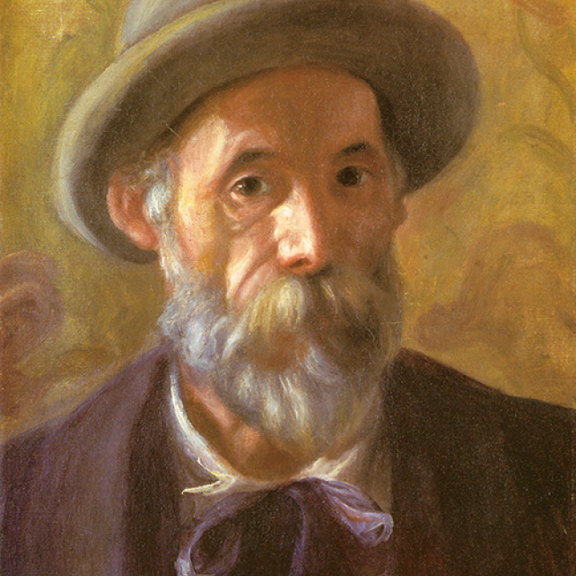

Auguste Renoir
1841.2.25 ~ 1919.12.0 3

After a trip to Italy, he drew lines and forms clearly with light tones, and painted works with a classical tendency, which gave deep meaning to the composition of the screen. After that, he broke away from Impressionism and regained his own rich color expression, establishing a mature style by contrasting primary colors.